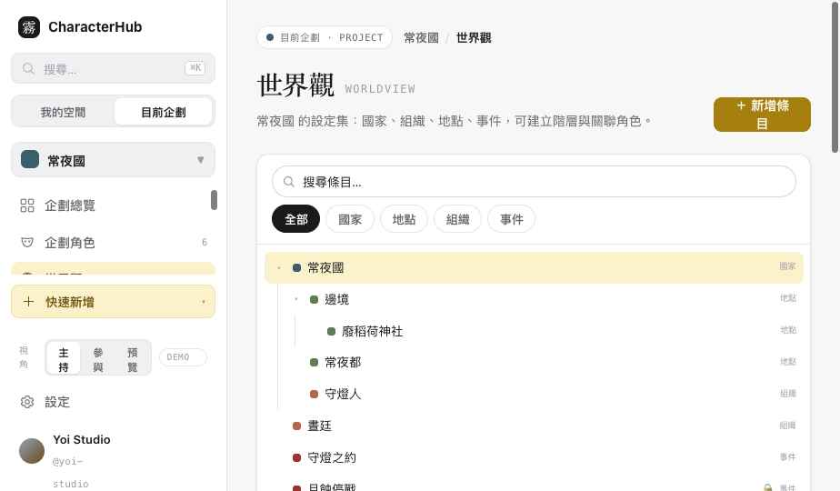
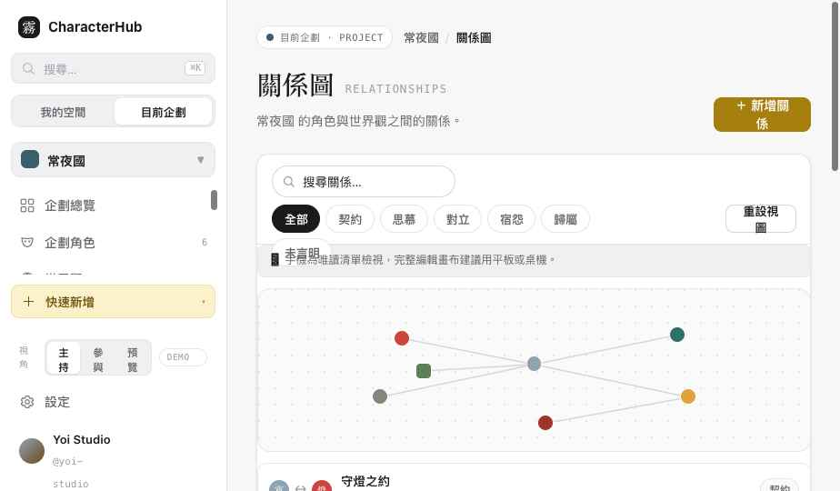
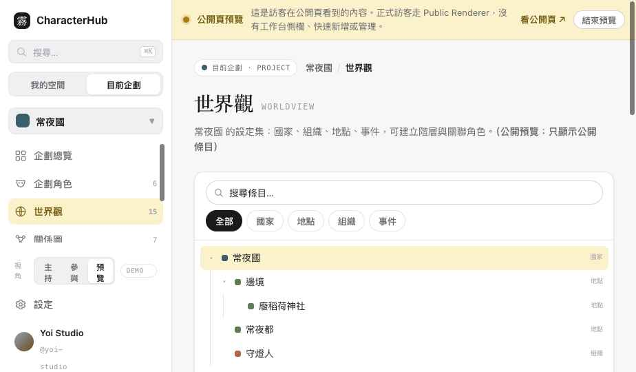

世界觀與關係圖完成。世界觀＝Project-scoped 階層 master-detail，關聯走 EntityLink；關係圖＝桌機畫布＋詳情，手機改清單／唯讀，Relationship 與 RelationshipLayout 分區，UI-only 狀態不入庫。
承上輪：UI 把 pending／rejected／reviewMessage 與 approved／archived／removed 顯示成一條 Combined Status，但正式 ownership 分成兩個 entity：
申請通過後才建立正式 ProjectCharacterLink。UI 可顯示 Combined Status，但不暗示所有狀態都存在 ProjectCharacterLink。
切側欄左下「視角」可看 主持／參與／公開預覽 的差異。



左欄階層樹可展開／收合，搜尋或篩選時切成扁平結果。詳情面板顯示麵包屑（祖先可點）、摘要、內容、下層條目。新增同層／子條目、編輯（含移動上層，parent cycle 會擋下並提示）、封存／刪除（有子條目時走特別確認流程）。
跨實體關聯（條目↔角色、條目↔條目）以 EntityLink 為唯一概念來源。UI 顯示名稱、頭像、關係標籤與摘要，但不只存名稱字串——每個 chip 背後是一筆 EntityLink（sourceType/sourceId/targetType/targetId/relationType/label）。例：廢稻荷神社 → 宵霧（駐守）、燈守（本體所在）；守燈之約 → 廢稻荷神社（締約地點）。點角色 chip 直接進角色詳情。
刪除關係不留殘留線條：畫布每次都從 relationships 陣列重建，刪除後對應 path＋label 一併消失（已驗證：類型篩選只剩 1 關係時，畫布精確只剩 1 條線、1 個標籤、2 個節點）。
| 視角 | 世界觀 | 關係圖 |
|---|---|---|
| Host 主持人 | 建立／編輯／子條目／封存刪除 | 新增／編輯／刪除關係、聚焦、重設視圖 |
| Member | 僅 fixture 身分——正式 UI 依 viewerPermissions 的動作權限判斷（worldEntry:* / relationship:* / relationshipLayout:update），不寫死 Member 一定能或不能編輯某模組。 | |
| Visitor 預覽 | 只顯示公開條目、無編輯工具、私人條目隱藏 | 只顯示公開關係、無編輯、內部關係隱藏 |
手機不強迫使用完整桌機畫布（≤1080px 切換）。提供：關係清單、角色／條目篩選、關係詳情、簡化小型預覽圖，並標示「完整編輯畫布建議用平板或桌機」。手機仍能搜尋關係、查看詳情、聚焦某角色、開啟相關角色／世界觀、唯讀瀏覽。請在實機 360／390px 確認。
| 檔案 | 變更 |
|---|---|
| assets/data.js | WorldEntry 階層（parentId/sortOrder/visibility/content）、EntityLink、Relationship、RelationshipLayout＋helper（worldChildren/worldAncestors/wouldCycle/descendantCount/linksOfEntity/relationshipsOf/relationshipsForCharacter/relationshipLayout）。 |
| assets/worldrel.css | 世界觀 master-detail＋階層樹；關係圖畫布／節點／邊／詳情／清單／手機 mini。 |
| pages/worldview.html | 重構：階層樹、搜尋／類型篩選、麵包屑、EntityLink 關聯、Loading/Empty/Error/Forbidden、新增／子條目／編輯／封存、cycle 防呆。 |
| pages/relationships.html | 重構：畫布＋詳情＋清單、節點聚焦、類型篩選、新增／編輯／刪除（無殘留）、重設視圖、手機唯讀清單／mini 圖。 |
| index.html | 世界觀／關係圖標記為已重設計，加 Slice 3 報告連結。 |
| 項目 | 作法 |
|---|---|
| RelationshipLayout | 只存 nodePositions / groupPositions / collapsedGroups / viewport / edgeRoutes；label、方向、source/target、類型由 Relationship 本體提供，不重複保存。手動曲線用 edgeRoutes[relationshipId]；刪除 Relationship 時 edgeRoute 一併移除。 |
| Empty State 分類 | 世界觀與關係圖分四態：模組未啟用（plug 圖示）· 已啟用但無資料 · 無權限（Forbidden）· 載入失敗（可重試）。不再用同一空狀態代表「未啟用」與「沒內容」。 |
| 權限判斷 | 按鈕依動作權限概念：worldEntry:create/update/archive、relationship:create/update/delete、relationshipLayout:update。Owner/Host/Member 只是 fixture 身分，不寫成固定產品規則。 |
| 有子條目的封存 | 三選一：封存此條目與所有子條目 · 將子條目移到上一層再封存 · 取消。不產生 parent 指向不存在條目的孤兒資料。 |
| EntityLink 公開裁切 | 公開預覽顯示 Link 時同時確認 Link 可見 ∧ source 可見 ∧ target 可見；關聯到私人角色／條目時整筆不顯示，不洩漏名稱頭像。反向關聯從同一筆 Link 查詢。 |
| 無障礙／替代檢視 | 關係清單為桌機替代檢視（不只手機）；節點可鍵盤 Focus + Enter、類型不只靠顏色（加字形）、SVG 有文字替代、prefers-reduced-motion、清單／畫布切換。 |
| Responsive 分級 | ≥1200px 完整畫布＋詳情・768–1199px 簡化畫布／清單切換・<768px 關係清單＋mini preview。 |
以下四種資料模型與本地 API 已存在，不是新的 Data Gap，本輪不需重建：
真正尚缺的 UX／資料銜接：
Slice 3 完成，先停。等你驗收。
維持單一 OCData、Demo interaction only，未建立 Repository／API／Auth／第二套 Store。